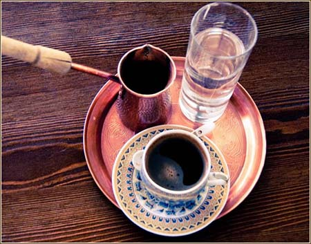

Кава - найпопулярніший напій в світі
Що ж таке кава?
Кава — напій, що виготовляється зі смаженого насіння плодів — «бобів» кавового дерева. Кава
найбільше цінується через виражену збадьорливу дію, завдяки вмісту алкалоїдів кофеїну та теоброміну. Кава
культивується з давніх
часів і займає важливе місце в кулінарних традиціях багатьох культур світу.
За деякими оцінками, кавовий напій є другою за об'ємами споживання речовиною на Землі після води
(за іншими — другим після води є чай).
Міжнародний день кави відзначається щорічно 1 жовтня.
Походження кави
Українське «кава» походить від тур. kahve, можливо, через польське посередництво (kawa). До турецької це слово потрапило з арабської, де воно первісно означало сорт легкого вина. Слід зауважити, що саме слово «кагва» не уживалося арабами ані щодо напою ані щодо рослини, які вони звали «бунн» — ймовірне, від його назви мовою оромо. Походження слова «кагва» неясне.
- За одною з версій, воно виводиться від араб. («не відчувати голоду»), що пов'язують зі здатністю напою створювати ілюзію ситості. Інша версія зв'язує його з араб. («сила», «наснага»), тобто «напій, що надає сил».
- Поширеною є етимологія, яка виводить назву напою від «Каффа» — назви держави на території сучасної Ефіопії (втім, існує навіть версія, яка виводить назву країни від назви напою). Проте, достатніх підстав вона не має.
- Третя версія пов'язує «кагва» з семітським коренем qhh («темний колір»), тлумачачи його як «темний напій».
Види кави
- Арабіка
- Робуста
- Ліберика
Способи приготування кави
- Кава по-східному готується в так званій джезві (турці). Часто використовуються спеції, такі, як кардамон, кориця і тому подібні.
- Кава-фільтр, американський, «Крапельниця» — більшість домашніх кавоварок працюють за «гравітаційним» принципом: гаряча вода капає на лійку з фільтром, в якій лежить мелена кава.
- Френч-прес — спеціальна колба (зазвичай скляна або металевий термос), в якій поршень з ситом відокремлює кавову гущу від напою.
- У гейзері, кава по-неаполітанськи. Гейзер складається умовно з трьох частин:
- в одну заливається вода
- в іншу засипають мелену каву
- а в третій через деякий час виявляється готовий напій
- Копі бубук — індонезійський спосіб. Кава дуже дрібного помелу заливається у чашці окропом. Копі бубук робиться дуже міцним та дуже солодким. В такий спосіб готують, наприклад, «копі лювак».